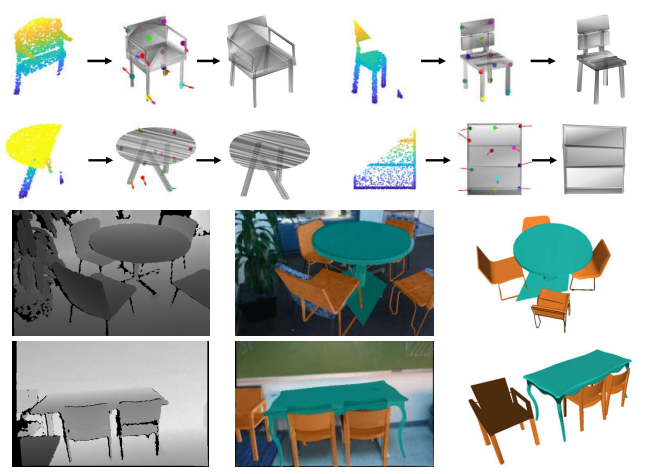
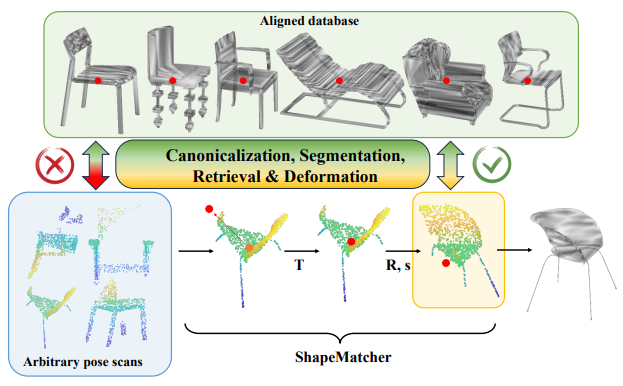
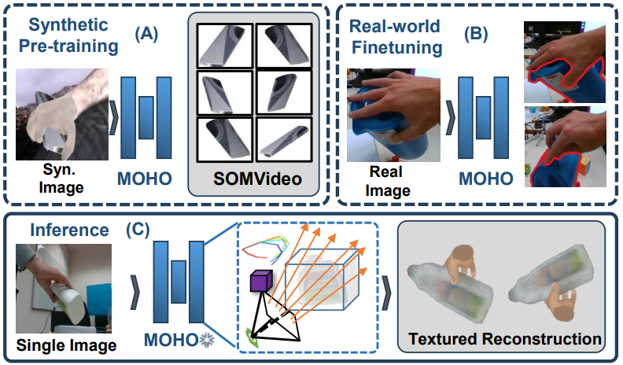
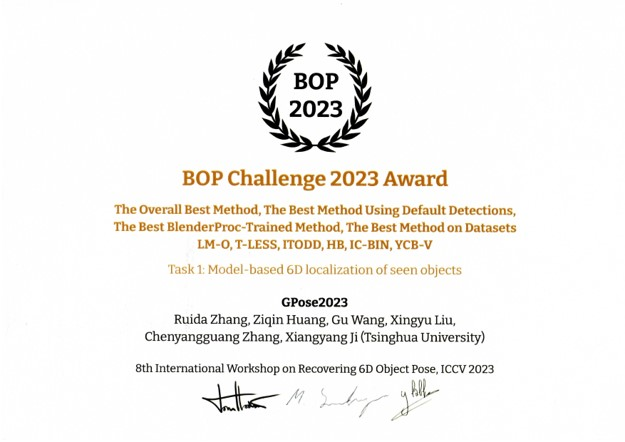
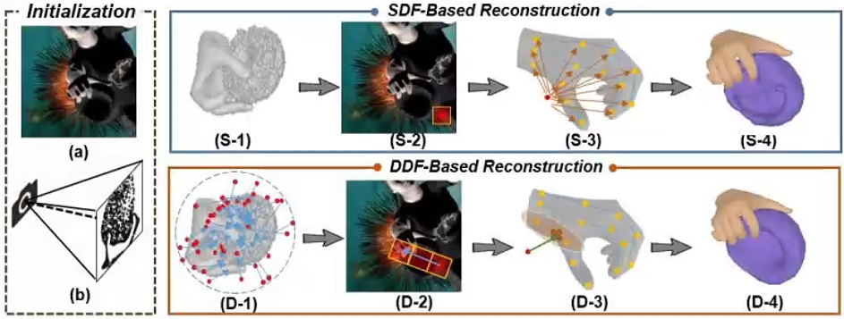
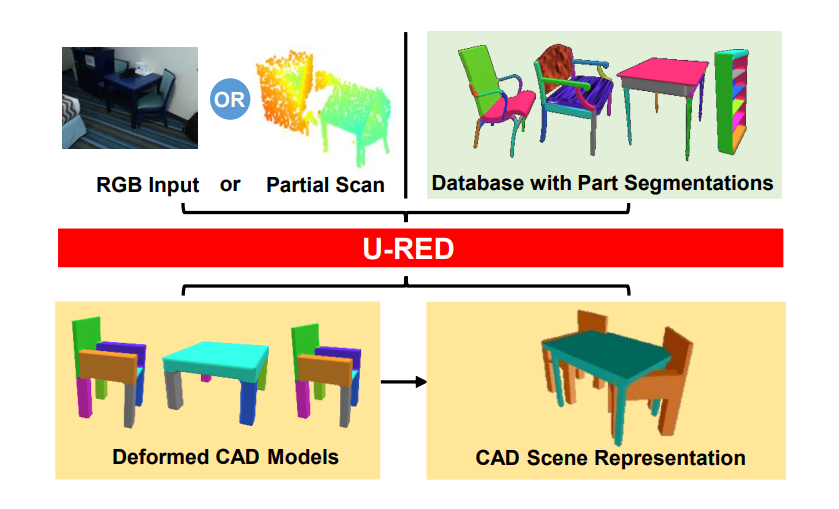
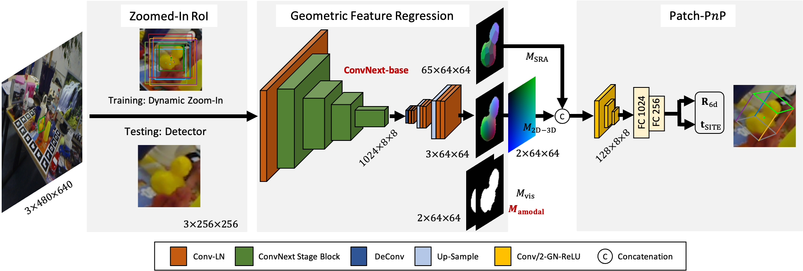

|
I am a third-year Ph.D. student at Tsinghua
University,
supervised by Prof.
Xiangyang Ji.
Previously, I received my B.E. degree in Automation Engineering at Tsinghua University.
|

|
- [2024.02] 4 papers are accepted to CVPR2024. KP-RED and ShapeMaker focus on joint shape canonicalization, segmentation, retrieval and deformation. SecondPose outperforms competitors on category-level pose estimation. MOHO leverages multi-view information for hand-held object reconstruction.
- [2023.10] Our work GPose2023 wins BOP Challenge 2023, ICCV R6D Workshop.
- [2023.09] Our paper DDF-HO on hand-held object reconstruction is accepted to NeurIPS2023.
- [2023.07] Our paper U-RED on unsupervised shape retrieval and deformation is accepted to ICCV2023.
- [2022.06] Our category-level pose estimation works GPV-Pose, RBP-Pose, SSP-Pose are accepted to CVPR2022, ECCV2022, IROS2022 respectively.
|
|
|  |
Ruida Zhang*, Chenyangguang Zhang*, Yan Di, Fabian Manhardt, Xingyu Liu, Federico Tombari, Xiangyang Ji IEEE/CVF Conference on Computer Vision and Pattern Recognition (CVPR), 2024 Paper |
|  |
Yan Di, Chenyangguang Zhang, Chaowei Wang, Ruida Zhang, Guangyao Zhai, Yanyan Li, Bowen Fu, Xiangyang Ji, Shan Gao IEEE/CVF Conference on Computer Vision and Pattern Recognition (CVPR), 2024 Paper |
|  |
Chenyangguang Zhang, Guanlong Jiao, Yan Di, Gu Wang, Ziqin Huang, Ruida Zhang, Fabian Manhardt, Bowen Fu, Federico Tombari, Xiangyang Ji IEEE/CVF Conference on Computer Vision and Pattern Recognition (CVPR), 2024 Paper |
|  |
Ruida Zhang, Ziqin Huang, Gu Wang, Xingyu Liu, Chenyangguang Zhang, Xiangyang Ji International Conference on Computer Vision Workshop (ICCVW), 2023 Winner of BOP Challenge 2023 @ ICCV R6D Workshop. Slides |
|  |
Chenyangguang Zhang*, Yan Di*, Ruida Zhang*, Guangyao Zhai, Fabian Manhardt, Federico Tombari, Xiangyang Ji 37th Conference on Neural Information Processing Systems (NeurIPS), 2023 Paper / Code |
|  |
Yan Di*, Chenyangguang Zhang*, Ruida Zhang*, Fabian Manhardt, Yongzhi Su, Jason Rambach, Xiangyang Ji, Federico Tombari International Conference on Computer Vision (ICCV), 2023 Paper / Code |
|  |
Xingyu Liu, Ruida Zhang, Chenyangguang Zhang, Bowen Fu, Jiwen Tang, Xiquan Liang, Jingyi Tang, Xiaotian Cheng, Yukang Zhang, Gu Wang, Xiangyang Ji European Conference on Computer Vision WorkShop (ECCVW), 2022 Winner of BOP Challenge 2022 @ ECCV R6D Workshop. Slides / Code |

|
Ruida Zhang*, Yan Di*, Zhiqiang Lou, Fabian Manhardt, Federico Tombari, Xiangyang Ji European Conference on Computer Vision (ECCV), 2022 Paper / Code |

|
Ruida Zhang*, Yan Di*, Fabian Manhardt, Federico Tombari, Xiangyang Ji IEEE/RSJ International Conference on Intelligent Robots and Systems (IROS), 2022 Paper |

|
Yan Di*, Ruida Zhang*, Zhiqiang Lou, Fabian Manhardt, Xiangyang Ji, Nassir Navab Federico Tombari IEEE/CVF Conference on Computer Vision and Pattern Recognition (CVPR), 2022 Paper / Code |